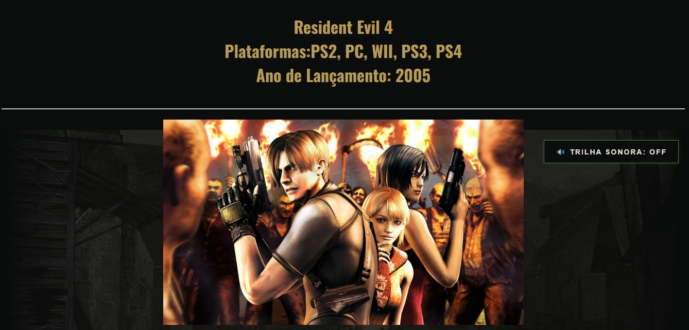

Sobre mim
Sou estudante de Análise e Desenvolvimento de Sistemas, com foco em desenvolvimento Front-End. Atualmente, estudo e aprimoro meus conhecimentos em HTML, CSS e JavaScript, buscando evoluir minhas habilidades por meio da criação de projetos práticos. Tenho interesse em desenvolvimento web e gosto de transformar ideias em interfaces funcionais, organizadas e visualmente agradáveis. Estou sempre buscando aprender novas tecnologias e melhorar meus projetos.
Projetos

Resident Evil 4
DESCRIÇÃO:
Site inspirado em Resident Evil 4, apresentando personagens, armas, locais, história e gameplay
TECNOLOGIAS:
HTML, CSS, JAVASCRIPT

Jogos 2013
DESCRIÇÃO:
Site dedicado a alguns dos principais jogos de 2013, com páginas sobre GTA V, Assassin's Creed IV e The Last of Us.
TECNOLOGIAS:
HTML, CSS, JAVASCRIPT

LeBron James
DESCRIÇÃO:
Site sobre a trajetória de LeBron James, destacando sua carreira na NBA, conquistas, equipes e principais momentos.
TECNOLOGIAS:
HTML, CSS